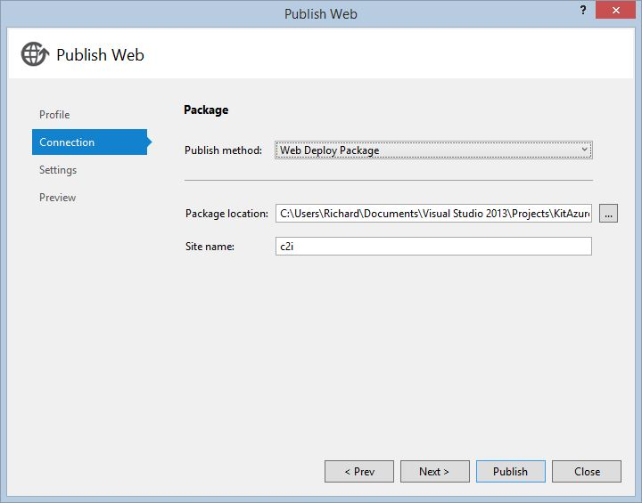
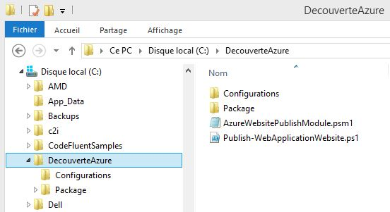
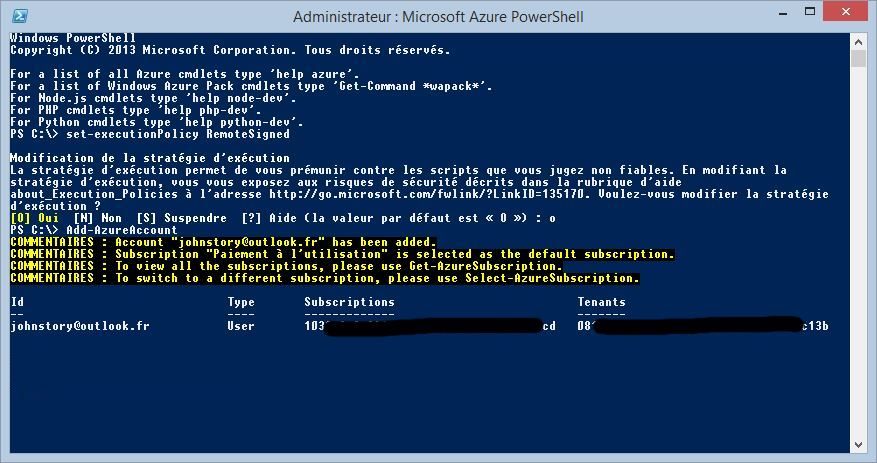
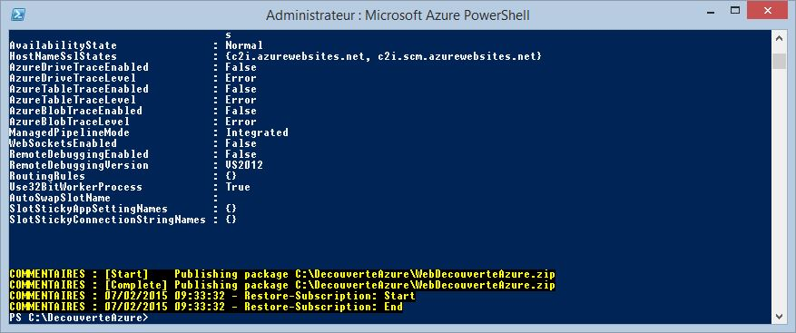
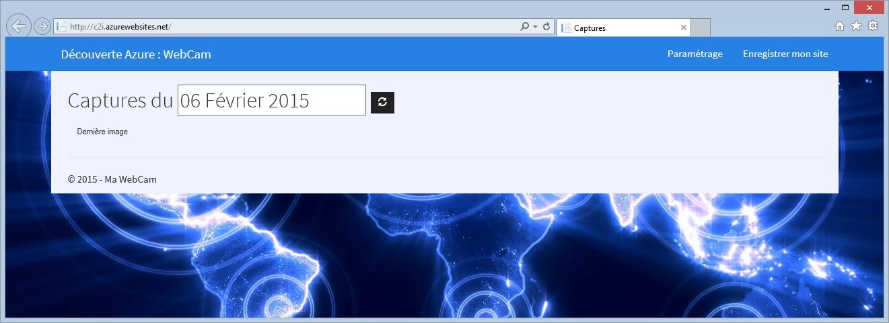

Le but de ce tutoriel est de vous montrer comment déployer facilement un site web Azure avec Microsoft Azure PowerShell.
La première étape consiste à créer votre compte Azure.
(copier-coller de l'article précédent)
Maintenant que votre compte Azure est crée, il faut déployer votre site web. On peut faire cela de nombreuses façons : avec l'outil de publication intégré de Visual Studio, via FTP, en ligne de commande, avec MSBuild, msdeploy.exe, etc.
Dans ce tutoriel, on va le faire "à la main", avec Microsoft Azure Powershell.
La première étape va consister à créer un package de déploiement. Ouvrez la solution dans Visual Studio puis sur le projet web dans le menu contextuel cliquez sur Publish.
Créez alors un nouveau profil et sélectionnez la méthode de publication "Web Deploy Package" :

Le "package location" est le répertoire ou le package sera généré et le "site name" le nom de votre site (étonnant non ?). Pour le "package location", créez un répertoire "Package" dans le répertoire "PublishScripts" de façon à ce que l'on ai la structure suivante :

Cliquez sur Publish et vous verrez alors dans le répertoire cible votre package, le fichier WeDecouverteAzure.zip.
Vous pouvez imaginer un scénario ou cette génération est automatisée pendant la build. Vous n'avez plus alors qu'à récupérer ce zip.
Si vous n'avez pas Microsoft Azure PowerShell d'installé, vous pouvez le télécharger et l'installer en exécutant Microsoft Web Plateform Installer.
Exécutez maintenant Microsoft Azure PowerShell en mode administrateur. La première étape va consister à enregistrer votre profil Azure en mode remote :
set-executionPolicy RemoteSigned
Puis ajoutez votre compte Azure avec la commande :
Add-AzureAccount
Une fenêtre d'identification apparait : connectez-vous alors avec votre compte Microsoft.

Félicitations : vous êtes maintenant connecté à votre compte Azure.
NB : pour en savoir plus sur la connection à votre compte, lisez l'article Installation et configuration d'Azure PowerShell.
Si vous voulez savoir exactement ce qu'à enregistré cette commande PowerShell, rendez-vous dans le dossier (le contenu des fichiers json présents est très instructif) :
c:\Users\<VotreNomdUtilisateur>\AppData\Roaming\Windows Azure Powershell
Une autre façon de voir le contenu de ce dossier, c'est d'exécuter le cmdlet :
Get-AzureSubscription
Vous avez presque fini mais avant de déployer le package, il faut le configurer correctement. Ouvrez pour cela le fichier json de configuration WebDecouverteAzure-WAWS-dev.json. Modifiez son contenu pour que les name et location du webSite et correspondent avec votre site Azure :
"environmentSettings": { "webSite": { "name": "c2i", "location": "West Europe" } }
Il ne suffit plus maintenant pour déployer votre package que d'exécuter le cmdlet Publish-WebApplicationWebsite.ps1avec les bons arguments :
Publish-WebApplicationWebsite.ps1 -verbose -Configuration Configurations\WebDecouverteAzure-WAWS-dev.json -WebDeployPackage Package\WebDecouverteAzure.zip
Il n'y a rien de bien sorcier si vous avez respecté l'organisation des répertoires. Vous pouvez maintenant l'exécuter :

Félicitations : votre site est maintenant en ligne !
